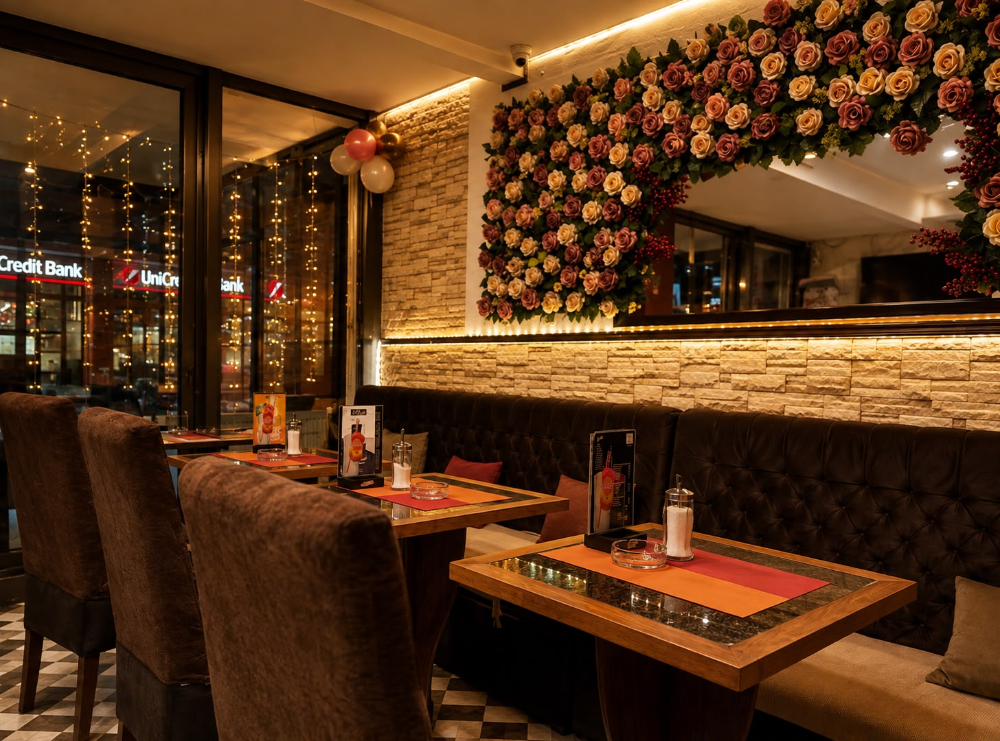
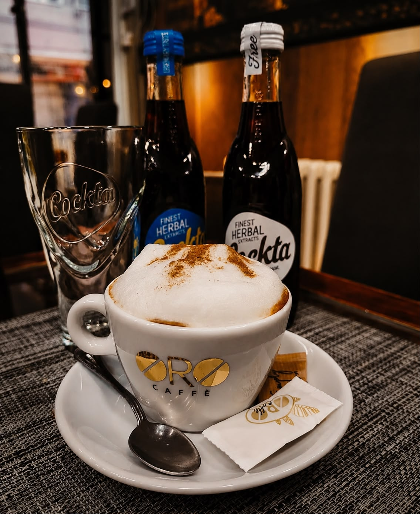

Caffe di Romma Since 2021
Dobro došli u Caffe di Romma
Kafa. Atmosfera. Trenuci koji se pamte.
01
Pažljivo odabrana kafa
Ukus biran sa iskustvom, kako bi svaka šoljica bila razlog da nam se vratite.
02
Iskustvo koje se oseća
Dugogodišnje poznavanje ugostiteljstva utkano je u svaki detalj usluge.
03
Atmosfera kojoj se vraćate
Topao ambijent za jutarnju kafu, predah i razgovore sa dragim ljudima.
Caffe di Romma
O nama
Caffe di Romma osnovala je Žaklina Rašić 2021. godine, nakon dugogodišnjeg rada kao konobarica i šankerka. Vreme provedeno iza šanka naučilo ju je da dobar kafić ne čine samo piće i enterijer, već ljudi, pažnja i osećaj da je svaki gost dobrodošao.
Vođena tim iskustvom, odlučila je da otvori svoj prvi kafić — mesto u kom će spojiti kvalitetnu kafu, posvećenu uslugu i toplu atmosferu. Posebnu pažnju posvetila je izboru kafe, tražeći ukus koji će gosti prepoznati i kom će želeti da se vrate.
Tako je nastao Caffe di Romma: kutak za jutarnji ritual, predah tokom dana i duge razgovore sa dragim ljudima. Od prvog dana želja je ista — da svaki gost ode zadovoljan i ponovo dođe kao prijatelj.
Dobar kafić ne čine samo kafa i enterijer, već pažnja, ljudi i osećaj da ste uvek dobrodošli.
Žaklina Rašić Osnivačica Caffe di Romma
